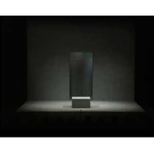
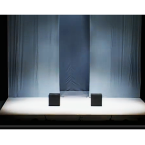
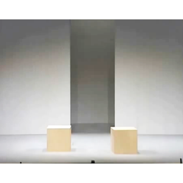

-ABOUT-
舞台コント型お笑いコンビ「絵画教室」の第5回公演が決定！
第五回を迎えた絵画教室のライブ。今回はとある帝国と反乱軍のお話、そしてある先生と生徒の物語です。
「おもいっきり笑えて、少しせつない」をコンセプトに絵画教室の二人がお贈りいたします。
前回よりも公演数を増やし、全4公演行います。是非お越しください！
- 開催日程：
- 1月18日,1月19日,1月25日1月26日
- 劇場：
- 高円寺OOXXシアター



絵画教室 -ART-SCHOOL-
- 田上良輝 -Yoshiteru Tanoue-
- 下田輝良 -Teruyosi Shimoda-
2007年結成。キャリア3年目にして、初の単独ライブを敢行。
チケットは全日ソールドアウトになる盛況ぶりを見せた。
活動は主に舞台を中心とし、ライブだからこそ出来る演出やスタイルにこだわっている。
2013年は全国数カ所に及ぶ公演ツアーを行った。
-OUTLINE-
MushroomEnpire あらすじ
-
-登校時間-
舞台はとある学校。朝の登校時間に、「生徒」はある事に悩んでいた。
「生徒」は仲の良く、良き指導者でもある「先生」に相談をしようと、朝のHR後に「先生」へと相談に行く。 -
-きのことたけのこ-
「生徒」に相談を受けた「先生」はゆっくりと話し始めた。
それはある帝国の人間と反乱軍に属していた人間の勘違いが産んだ奇跡の話だった。 -
-森と里-
昼休み、「生徒」は再び「先生」のもとを訪れる。
「先生」は帝国と反乱軍の過去について話を始めた。
もともと2つの組織は、仲の良かった森と里であった。しかし... -
-「先生」と「生徒」-
「先生」は「生徒」の相談に回りくどく答えを出していた。
しかし「生徒」の顔を見ると、あまり納得をしていなかった。
そこで、「先生」が思いついた、「生徒」への答えとは... -
-下校時間-
「生徒」は「先生」の答えから、悩みを解決する。
下校時間、家路につく途中で「生徒」はある光景に出会う。
-TICKET-
チケット情報
| 1/18 | 1/19 | 1/25 | 1/26 | |
|---|---|---|---|---|
| 販売状況 | 完売 | 僅少 | 僅少 | 潤沢 |
| 当日券 | なし | あり | あり | あり |
-注意事項-
- チケット購入時には必ず日時と座席をご確認の上お求めください。購入後の変更・払い戻し等は一切できません。
- チケットはいかなる事情（紛失・焼失・破損）があっても再発行いたしません。大切に保管してください。
- チケットはご入場前に半券を切り離すと無効となります。ご注意ください。
- チケットは、券面記載日時の興行中止の場合をのぞいて、他の日時や他の席のチケットとの交換または払い戻し等はいたしません。
また、興行中止の場合でも交通費や宿泊費などの補償はできません。あらかじめご了承ください。 - 興行中止などによる払い戻しの場合は、所定の期間に限り所定の場所で行います。
ただし、チケットを破損・紛失したり、甚だしく汚損し判読しがたい場合、一切払い戻しはいたしません。 - インターネット・オークション等での意図的な転売行為を禁止いたします。
転売目的での購入は固くお断りいたします。 またトラブルに関しましても一切責任を負いません。 - チケットの座席番号をご自宅にお控えいただければ急用のさい便利です。
- 開演中の入場については、制限させていただくことがありますので、あらかじめご了承ください。
- 開演中の場内での撮影・録音ならびに劇場内への危険物のお持込は固くお断りいたします。
- 客席内では、携帯電話・アラームなど音の出る物の電源は必ずお切りください。
- 劇場内で係員の指示及び注意事項に従わない場合や他のお客様への迷惑行為を確認した場合は、入場をお断りすることがあります。
- また、劇場内で係員の指示や注意事項に従わず生じた事故などについては一切責任を負いません。
- チケットはご観劇のさい、必ず終演までお持ちください。